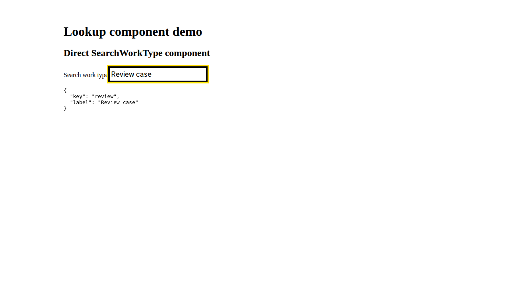

Back to Odhín report
Accessibility page-state summary
direct SearchWorkType exposes options and a keyboard selection contract / direct SearchWorkType exposes options and a keyboard selection contract
Automated heuristics support investigation; they do not replace screen-reader testing or establish WCAG conformance.
View page screenshot

Page summary snapshot captured after behavioral checks; engine evidence records the scanned state.
Behavioral checks
- No behavioral checks requested.
Engine summary
URL: http://localhost:4200/coverage/lookups?feature=search-work-type
Strict mode: on
axe
passed
0 total, 0 unexpected; 0 node(s) needing investigation
wave-like
passed
0 total, 0 unexpected; 0 node(s) needing investigation
screen-reader
passed
0 total, 0 unexpected; 0 node(s) needing investigation